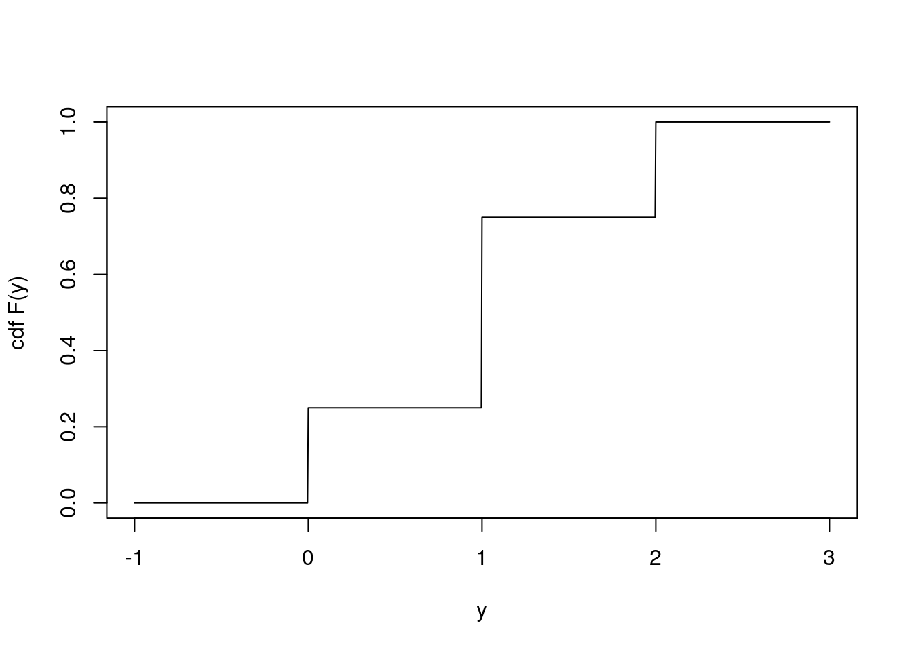

Chapter 7 Univariate transformations
7.1 Transformed random variables
In this chapter, starting with a random variable \(Y\), we define a new random variable \(U = U(Y)\). We want to be able to determine the distribution of the transformed random variable \(U\).
We have already studied one method for finding the distribution of a transformed random variable, when that transformation is linear (\(U = a + bY\) for suitable constants \(a\) and \(b\)). In that case, if we have the moment generating function of \(Y\), we can use Theorem 3.2 to find the moment generating function of \(U\).
However, we are often interested in non-linear transformations. For example, we have seen (in Proposition 6.6) an example where we squared a \(N(0, 1)\) random variables to obtain a new random variable with \(\chi^2_1\) distribution, i.e. we had a transformation of the form \(U = Y^2\).
We begin with two simple examples.
Example 7.1 Suppose \(Y\) has pdf \[f(y) = 2y, \quad \text{for $0 < y < 1$}.\] Let \(U = Y^2\). What is the distribution of \(U\)?
Let \(G(.)\) and \(g(.)\) be the cdf and pdf of \(U\). We have \[G(u) = P(U \leq u) = P(Y^2 \leq u) = P(Y \leq \sqrt{u}) = F(\sqrt{u}).\] So \[\begin{align*} g(u) &= \frac{dG(u)}{du} = \frac{dF(\sqrt{u})}{du} = f(\sqrt{u}) \frac{1}{2 \sqrt{u}} \\ &= 2 \sqrt{u} \frac{1}{2 \sqrt{u}} = 1 \quad \text{for $0 < u < 1$,} \end{align*}\] which is the pdf of a \(U(0, 1)\) distribution. So \(U \sim U(0, 1)\).Example 7.2 Suppose \(Y \sim U(0, 1)\). Let \(U = -\log{Y}\). What is the distribution of \(U\)?
Let \(G(.)\) and \(g(.)\) be the cdf and pdf of \(U\). We have \[\begin{align*} G(u) &= P(U \leq u) = P(\log Y \leq u) \\ &= P(\log Y \geq -u) = P(Y \geq e^{-u}) \\ &= 1 - P(Y < e^{-u}) = 1 - F(e^{-u}) \\ &= 1 - e^{-u}, \quad \text{for $0 < u < \infty$.} \end{align*}\] So \[g(u) = \frac{dG(u)}{du} = e^{-u}, \quad \text{for $u > 0$},\] which we recognise as the pdf of an exponential distribution with rate parameter \(1\), so \(U \sim \text{exponential}(1)\).7.2 One-to-one transformations of continuous random variables
Proof (Theorem 7.1). Let \(F(.)\) and \(f(.)\) be the cdf and pdf of \(Y\), and let \(G(.)\) and \(g(.)\) be the cdf and pdf of \(U\). Suppose \(U = h(Y)\) is a one-to-one function with inverse \(Y = w(U)\). Since \(h(.)\) is one-to-one, we may conclude that is is either an increasing or a decreasing function, and we split the proof into two cases.
Case 1: \(h(.)\) is an increasing function. Then \[G(u) = P(U \leq u) = P(h(Y) \leq u) = P(Y \leq w(u)),\] since \(h(.)\) is increasing. So \(G(u) = F(w(u))\), and \[g(u) = f\left(w(u)\right) \frac{dw(u)}{du} = f\left(w(u)\right) \frac{dy}{du} = f\left(w(u)\right) \left|\frac{dy}{du}\right|,\] since \(\frac{dy}{du} > 0\).
Case 2: \(h(.)\) is a decreasing function. Then \[G(u) = P(U \leq u) = P(h(Y) \leq u) = P(Y \geq w(u)),\] since \(h(.)\) is decreasing. So \(G(u) = 1 - F(w(u))\), and \[g(u) = - f\left(w(u)\right) \frac{dw(u)}{du} = f\left(w(u)\right) \left(- \frac{dy}{du}\right) = f\left(w(u)\right) \left|\frac{dy}{du}\right|,\] since \(\frac{dy}{du} < 0\).Example 7.3 (Kinetic energy of gas molecules) Gas molecules move about with varying velocity which has, according to the Maxwell-Boltzmann law, a pdf given by \[f(v) = c v^2 e^{-\beta v^2}, \quad v > 0,\] where \(c\) is a constant to ensure the pdf integrates to \(1\). The kinetic energy is given by \(U = \frac{1}{2} m V^2\), where \(m\) is the mass of the molecule. What is the pdf of \(U\), the kinetic energy of the molecule?
The domain of \(U\) is \(0 < u < \infty\). For \(v > 0\), \(h(v) = \frac{1}{2} m v^2\) is a one-to-one function, as it is increasing with \(v\). So we may apply Theorem 7.1 to find the pdf \(g(.)\) of \(U\).
We have \(u = \frac{1}{2} m v^2\), so the inverse transformation is \(v = \sqrt{\frac{2u}{m}}\), and \[\frac{dv}{du} = \frac{\sqrt{2}}{2 \sqrt{um}} = \frac{1}{\sqrt{2 u m}} > 0 \quad \text{for $u > 0$}.\] So \(U\) has pdf \[\begin{align*} g(u) &= f \left(\sqrt{\frac{2u}{m}} \right) \frac{1}{\sqrt{2um}} \\ &= c \cdot \frac{2u}{m} e^{-\beta\frac{2u}{m}} \frac{1}{\sqrt{2um}} \\ &= c \sqrt{2u} m^{-\frac{3}{2}}e^{-\beta\frac{2u}{m}} \quad \text{for $u > 0$.} \end{align*}\] We see that \[g(u) \propto u^{\frac{1}{2}} e^{-\beta\frac{2u}{m}} = u^{\frac{3}{2} - 1} e^{-\theta u}\] with \(\theta = 2\beta / m\). So, by comparison with Equation (6.1), \(U \sim \text{gamma}(3/2, 2 \beta/m)\).7.3 Generating samples from any distribution
An immediate corollary of Proposition 7.1 allows us to use a sample from a \(U(0, 1)\) distribution to generate a sample from any other continuous distribution:
In fact, we can use the same method to find samples from a discrete distribution. To do this, we first need to define what we mean by \(F^{-1}(.)\), as the cdf \(F(.)\) is constant between points in the domain, and so is not an invertible function.
For instance, if \(Y \sim \text{binomial}(2, 0.5)\), then we can plot the cdf of \(Y\):
curve(pbinom(x, 2, 0.5), from = -1, to = 3,
xlab = "y", ylab = "cdf F(y)", n = 1001)
In this example, if we ask for \(F^{-1}(0.25)\), then it is not immediately clear what this means, as \(F(y) = 0.25\) for all \(0 \leq y < 1\).
We define \(F^{-1}(.)\) by the quantile function \[\begin{equation} F^{-1}(u) = \inf\{y \in \mathbb{R}: F(y) \geq u\}, \tag{7.1} \end{equation}\]for \(u \in (0, 1)\). In our example, we now have \(F^{-1}(0.25) = 0\). If \(F(.)\) is an invertible function, then this definition agrees with the usual inverse we saw before.
Equipped with this definition of \(F^{-1}(.)\), we may now rewrite Corollary 7.1 to apply to any distribution: